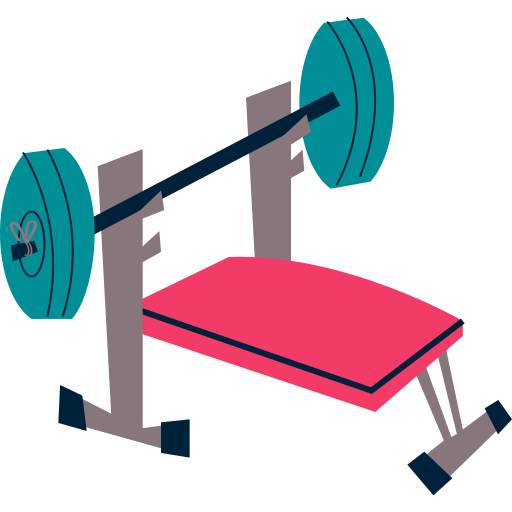

<p-toolbar
  styleClass="bg-gray-900 shadow-2"
  [style]="{
    'border-radius': '3rem',
    'background-image':
      'linear-gradient(to right, var(--bluegray-500), var(--bluegray-800))'
  }"
>
  <ng-template pTemplate="start">
    
  </ng-template>

  <ng-template pTemplate="center">
    <div class="flex flex-wrap align-items-center gap-3">
      <button
        pButton
        icon="pi pi-home"
        class="p-button-rounded p-button-secondary"
      ></button>
      <button
        pButton
        icon="pi pi-user"
        class="p-button-rounded p-button-secondary"
      ></button>
      <button
        pButton
        icon="pi pi-search"
        class="p-button-rounded p-button-secondary"
      ></button>
    </div>
  </ng-template>

  <ng-template pTemplate="end">
    <div class="flex align-items-center gap-2">
      <p-avatar
        image="https://primefaces.org/cdn/primeng/images/demo/avatar/amyelsner.png"
        alt="deveria ter algo aqui"
        shape="circle"
      ></p-avatar>
      <span class="font-bold text-bluegray-50"> Amy Elsner </span>
    </div>
  </ng-template>
</p-toolbar>
